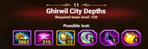

Rotas Ótimas para o Mapa #11
Três jogadores devem se coordenar para seguir essas rotas. Preste atenção nos pontos de buff e espere seus companheiros de guilda alcançarem os pontos de buff antes de avançar. Lembre-se — quanto mais torres vocês destruírem, mais fracos os inimigos ficam. O chefe exige a destruição das torres para ser enfraquecido.
Observação: Rotas entre parênteses () identificam as torres do esquadrão inimigo principais que devem ser destruídas para remover o buff do chefe no Mapa #11 antes de avançar para enfrentar o chefe final.
MAPA DE AVENTURA de Mascotes #11 – Profundezas da Cidade de Ghirwil
- Nível mínimo do herói: 130+
- Poder total recomendado: 420k+
Profundezas da Cidade de Ghirwil apresenta uma aventura desafiadora que requer coordenação cuidadosa com seus companheiros de guilda. Este guia ajudará você a navegar pelo mapa de forma eficiente e derrotar o poderoso chefe.
Pontos-chave da Estratégia
CRUCIAL: As torres 36, 38 e 40 DEVEM ser destruídas antes de enfrentar o chefe para reduzir sua força. Espere seus companheiros destruírem essas torres.
Estratégia de Buff: Antes de avançar, pegue o buff no Esquadrão 2 e espere seus amigos entrarem para também receberem o buff do Esquadrão 2. Assim vocês avançam com os 3 buffs do esquadrão 2. Paciência é a chave para a vitória.
Os três jogadores passarão pelos esquadrões 2 e 6 no mapa, onde os buffs estão localizados, tornando todos mais fortes.
Informações de Buff
Tabela: Buff Esquadrão 2
| Buff Esquadrão 2: Escolha um buff para sua equipe |
| Aumento de Dano Físico |
Aumento de Dano Mágico |
Aumento de Cura |
| Aumenta o dano físico causado em 20% |
Aumenta o dano mágico causado em 20% |
Aumenta toda a cura em 20% |
Tabela: Buff Esquadrão 6
| Buff Esquadrão 6: Escolha um buff para sua equipe |
| Resistência a Dano Físico |
Resistência a Dano Mágico |
Resistência a Dano Puro |
| Reduz o dano físico recebido em 20% |
Reduz o dano mágico recebido em 20% |
Reduz o dano puro recebido em 20% |
Sequência e Táticas Recomendadas
- Onda inicial: Comecem juntos, limpem os primeiros nós para preservar Pontos de Ação.
- Dividir para as rotas designadas: Sigam sua rota, mas fiquem próximos o suficiente para se reagrupar nos principais pontos de buff.
- Garantir pontos de buff: Os Esquadrões 2 e 6 contêm flores de buff duradouras — passem por ambos para que todos os três jogadores recebam os buffs.
- Destruir torres prioritárias: Derrubem as Torres 36 → 38 → 40 antes de encostar no chefe.
- Reagrupar e chefe: Depois que essas torres caírem, curem-se, peguem buffs e enfrentem o chefe juntos. Guardem grandes recargas para as fases do chefe.
Etiqueta dos Pontos de Buff
Cada jogador pega um buff nos pontos de buff. Coordenem quem pega o quê (aumento de dano vs resistência vs cura). Nunca pegue um buff sozinho — espere o time inteiro para maximizar o benefício.
Mecânicas do Chefe
Impulso do Chefe
- Aumenta o dano causado em 25%
- Reduz o dano recebido em 25%
- Multiplica a vida por 10
- Aumenta o ganho de energia em 100%
- Reduz a duração de efeitos negativos em 80%
- Nenhum ataque pode causar mais de 1% da vida máxima do chefe
- Imune a habilidades que reduzem energia
Aumento de Dano do Chefe
- Aumenta o dano causado em 100%
- Reduz o dano recebido em 80%
- Multiplica a vida por 10
- Aumenta o ganho de energia em 100%
- Reduz a duração de efeitos negativos em 80%
- Nenhum ataque pode causar mais de 1% da vida máxima do chefe
- Imune a habilidades que reduzem energia
Regra Central — Destrua Estas Torres Primeiro
As torres 36, 38 e 40 devem ser destruídas antes de enfrentar o chefe final.
Essas torres dão buffs massivos ao chefe (aumento de dano, resistência a dano, multiplicador de vida, etc.). Espere seus aliados terminarem antes de iniciar o nó do chefe.
Resistência a Dano
- Reduz o dano recebido em 95%
- Derrote o Esquadrão 40 - Olho do Arauto para remover este buff do CHEFE
- Derrote o Esquadrão 36 - Olho do Arauto para remover este buff do CHEFE
- Derrote o Esquadrão 38 - Olho do Arauto para remover este buff do CHEFE
Possíveis Recompensas - Mapa 11

Tabela: Possíveis Recompensas - Mapa 11
| Item |
Quantidade |
| Poção de PET |
3062 |
| Partícula do Caos |
215 |
| Esfera de Invocação de PET |
12 |
| Pedra da Lua Impecável |
1 |
| Pedra da Noite Impecável |
1 |
| Pedra do Sol Impecável |
1 |
| Biscoito Axel |
1 |
Dicas Práticas
- Comuniquem-se com pings simples ou mensagens curtas de voz — anunciem buffs e ataques às torres.
- Guarde uma habilidade defensiva/de cura importante para a fase do chefe após as torres serem destruídas.
- Se mais de um jogador morrer em um ataque a torre, reinicie e tente novamente — pequenos erros se acumulam neste mapa.
- Certifique-se de que pelo menos um jogador construa resistência/sobrevivência — as partidas falham rapidamente sem sustentação.
Conclusão
O sucesso nas Profundezas da Cidade de Ghirwil exige coordenação cuidadosa com seus companheiros de guilda. Os pontos-chave a lembrar são:
- Todos os três jogadores devem coletar buffs dos Esquadrões 2 e 6
- As torres 36, 38 e 40 DEVEM ser destruídas antes de enfrentar o chefe
- Espere seus companheiros completarem os objetivos antes de avançar
- Escolha buffs que complementem a composição da sua equipe
- Planeje sua rota cuidadosamente para maximizar a eficiência com Pontos de Ação limitados
Com a coordenação e execução adequadas dessa estratégia, sua equipe será capaz de conquistar as Profundezas da Cidade de Ghirwil e reivindicar suas valiosas recompensas.

 Guia do Mapa de Aventura de PET #6 – Hero Wars: Dominion Era
Guia do Mapa de Aventura de PET #6 – Hero Wars: Dominion Era Guia do Mapa de Aventura de PET #7 – Hero Wars: Dominion Era
Guia do Mapa de Aventura de PET #7 – Hero Wars: Dominion Era Guia do Mapa de Aventura de PET #8 – Queda da Cidade Celestial
Guia do Mapa de Aventura de PET #8 – Queda da Cidade Celestial Guia do Mapa de Aventura de PET #9 – Hero Wars: Dominion Era
Guia do Mapa de Aventura de PET #9 – Hero Wars: Dominion Era Como Vencer o Mapa de Aventura #10 em Hero Wars: Dominion Era
Como Vencer o Mapa de Aventura #10 em Hero Wars: Dominion Era